Graph Algorithms
What are graphs?
Vertices
Individual nodes, each with a unique identifier, and possibly some data values.
Edges
Vertices are connected by edges. Edges can be directed or undirected.
Each edge can have some data value.
An undirected graph
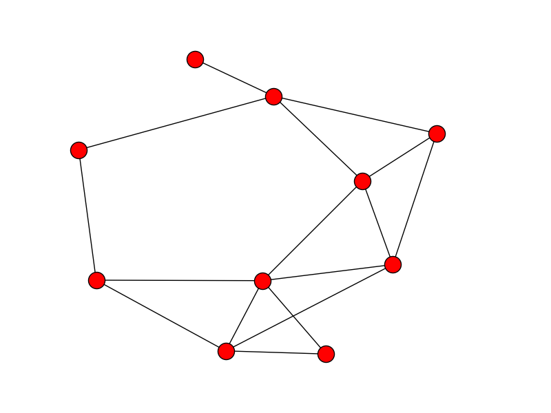
A directed graph
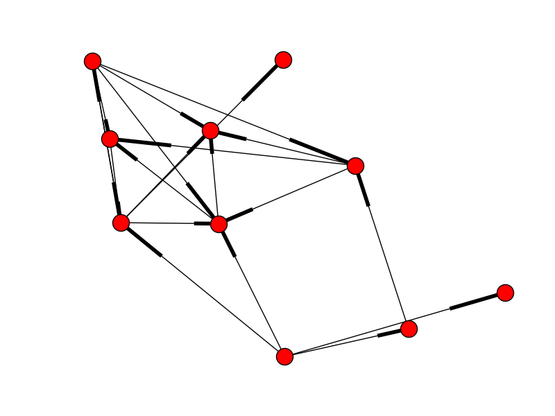
Data structures for graphs
A directed graph can be used to represent an undirected graph.
! Why?
Encoding directed graph
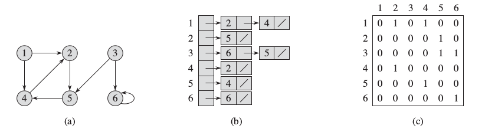
(a) The graph
(b) Adjacency list
(c) Adjacency matrix
Data structures for graphs
Adjacency list
class Graph:
def __init__(self):
self.adjacency = dict()
def add_node(self, v):
self.adjacency[v] = []
def add_edge(self, v1, v2):
self.adjacency[v1].append(v2)
! Can you modify this to support labels to vertices and edges?
Adjacency list implementation
class Graph
def __init__(self):
self.adjacency = dict()
self.nodes = dict()
self.edges = dict()
def add_node(self, v, data=None):
self.adjacency[v] = []
self.nodes[v] = data
def add_edge(self, v1, v2, data=None):
self.adjacency[v1].append(v2)
self.edges[(v1,v2)] = data
def node(self, v):
return self.nodes[v]
def edge(self, v1, v2):
return self.edges[v]
! the additional hashmaps are used to map vertex and edge identifiers to their respective data.
Data structures for graphs
Adjacency matrix
class Graph:
def __init__(self, N):
self.matrix = []
for row in range(N):
column = [0 for i in range(N)]
self.matrix.append(column)
def add_node(self, v):
pass
def add_edge(self, v1, v2):
self.matrix[v1][v2] = 1
! Can you modify this to support labels to vertices and edges?
Methods of graphs
class Graph:
# assume adjacency list implementation
def neighbours(self, v):
return self.adjacency[v]
def nodes(self):
return self.adjacency.keys()
Graphs
Paths:
A path in a graph $G$ is a sequence of vertices
$p = \left<v_1, v_2, \dots, v_n\right>$such that each adjacent pair of vertices are connected:
$$\forall i,\ (v_i, v_{i+1})\in\mathrm{edges}[G]$$
Reachability:
A vertex $y$ is reachable from $x$ if there exists a path
$\left<v_1, v_2, \dots, v_n\right>$such that$v_1 = x$and$v_n = y$.
Cycles:
A cycle is a path
$\left<v_1, v_2, \dots, v_n\right>$such that$v_1 = v_n$.
Graphs
Shortest path:
The shortest path between two vertices $x, y$ is a path
$\left<v_1, v_2, \dots, v_n\right>$such that$v_1 = x$and$v_n = y$.
Distance:
The distance $d(x, y)$ between two vertices $x, y$ is defined as the length of a shortest path from $x$ to $y$.
Direct acylic graph (DAG)
A DAG is a directed graph $G$ with no cycles.

Tree
Parent
A vertex $x$ is a parent of $y$ in $G$ if $(x, y)\in\mathrm{edges}[G]$.
Tree
A tree is a DAG $T$ in which every vertex has at most one parent.
Encoding of a tree
A tree can be very efficiently stored in a hash-map.
The keys are the vertices (as their identifiers), and values as their parents.
| vertex | parent |
|---|---|
| 1 | 3 |
| 3 | 8 |
| 4 | 6 |
| 6 | 3 |
| 7 | 6 |
| 8 | - |
| 10 | 8 |
| 13 | 14 |
| 14 | 10 |
Hashmap encoding of a tree
| vertex | parent |
|---|---|
| 1 | 3 |
| 4 | 3 |
| 3 | - |
| 2 | 1 |
! Can you re-construct the tree?
Graph search
- Enumeration of a graph
Breadth-first search (BFS)
Starts at a given vertex as the starting point.
Follow the edges to visit the neighbours.
Makes sure that each vertex is visited at most once.
Makes sure that all vertices reachable from the starting vertex will be visited.
Intuition:
- Color all the vertices white initially.
- Coloring the vertices black starting with the source.
- Keep exploring the neighbours of black vertices until no more white neighbours are found.
Augment nodes with data
Assume that the vertices have hashmaps as data:
G = Graph()
G.add_node(0, {"id": 0})
G.add_node(1, {"id": 1})
G.add_node(2, {"id": 2})
G.add_edge(0, 1)
G.add_edge(0, 2)
G.add_edge(1, 2)
G.add_edge(2, 1)
This allows us to add data:
G.node(0)["pi"] = 3.14
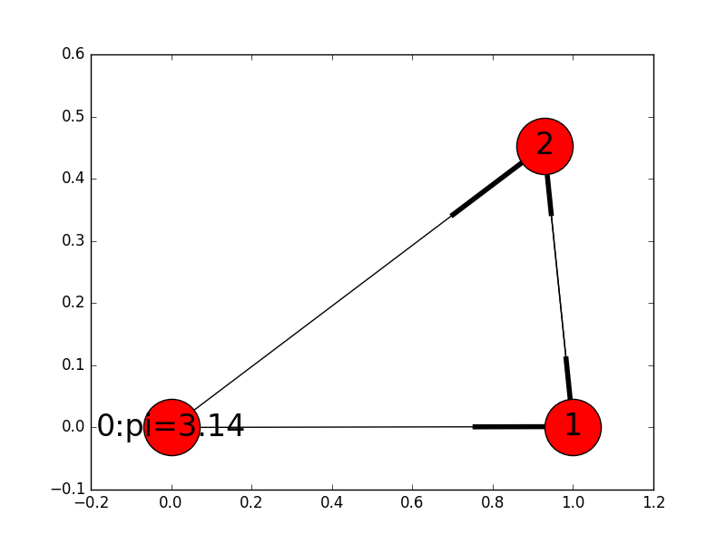
BFS
def bfs(G, s):
for v in G.nodes():
G.node(v)["color"] = "white"
queue = [s]
G.node(s)["color"] = "gray"
while len(queue) > 0:
u = queue.pop(0)
for v in G.neighbours(u):
if G.node(v)["color"] == "white"
queue.push(v)
G.nodes(v)["color"] = "gray"
G.nodes(u)["color"] = "black"
- “white” vertex is unvisited
- “gray” vertex has been explored, but neighbours unvisited
- “black” vertex has been visited, and all neighbours also visited
queueare vertices with neighbours to be visited. !
BFS
def bfs(G, s):
for v in G.nodes():
G.node(v)["color"] = "white"
queue = [s]
G.node(s)["color"] = "gray"
while len(queue) > 0:
u = queue.pop(0)
for v in G.neighbours(u):
if G.node(v)["color"] == "white"
queue.push(v)
G.nodes(v)["color"] = "gray"
G.nodes(u)["color"] = "black"
Why is it breadth first?
… because a first-in-first-out queue is used. !
BFS
def bfs(G, s):
for v in G.nodes():
G.node(v)["color"] = "white"
queue = [s]
G.node(s)["color"] = "gray"
while len(queue) > 0:
u = queue.pop(0)
for v in G.neighbours(u):
if G.node(v)["color"] == "white"
queue.push(v)
G.nodes(v)["color"] = "gray"
G.nodes(u)["color"] = "black"
Theorem:
A vertex turns gray only once.
A vertex turns black only once.
All vertices reachable from the source
swill turn black.
More BFS
Theorem:
Consider two vertices $x, y$ both reachable from the source $s$.
If $d(s, x) < d(s, y)$ then $x$ will turn gray before $y$.
We can use BFS($G$) to build a shortest-path tree from $s$, and compute the
distances from $s$ to every vertex in $G$.
Shortest path tree and distance via BFS
def bfs(G, s):
for v in G.nodes():
G.node(v)["color"] = "white"
G.node(v)["distance"] = None # Initialize
G.node(v)["parent"] = None # Initialize
queue = [s]
G.node(s)["color"] = "gray"
G.node(s)["distance"] = 0
while len(queue) > 0:
u = queue.pop(0)
for v in G.neighbours(u):
if G.node(v)["color"] == "white"
queue.push(v)
G.nodes(v)["color"] = "gray"
#-------------------------------------
# compute the distance from s -> v
# compute the parent of v in tree
#-------------------------------------
G.nodes(u)["color"] = "black"
Shortest path tree and distance via BFS
def bfs(G, s):
for v in G.nodes():
G.node(v)["color"] = "white"
G.node(v)["distance"] = None # Initialize
G.node(v)["parent"] = None # Initialize
queue = [s]
G.node(s)["color"] = "gray"
G.node(s)["distance"] = 0
while len(queue) > 0:
u = queue.pop(0)
for v in G.neighbours(u):
if G.node(v)["color"] == "white"
queue.push(v)
G.nodes(v)["color"] = "gray"
G.nodes(v)["distance"] = G.nodes(u)["distance"] + 1
G.nodes(v)["parent"] = u
G.nodes(u)["color"] = "black"
Depth-first search
Depth-first search (DFS)
Recall BFS discovers a vertex when it’s colored gray, and finishes with the discovery of a vertex when it’s colored black.
Not all vertices are guaranteed to be discovered by BFS.
DFS is a more powerful enumeration method:
It discovers all the vertices of a graph.
It records the discovery time of each vertex.
DFS
Each vertex has:
A color: white, gray and black.
Two timestamps: discovery time (from white to gray) and finishing time (gray to black).
DFS
def dfs(G):
for u in G.nodes():
G.node(u)["color"] = "white"
G.node(u)["parent"] = None
t = 0
for u in G.nodes():
if G.node(u)["color"] == "white":
t = dfs_visit(G, u, t)
DFS-Visit
def dfs_visit(G, u, t):
t = t + 1
G.node(u)["color"] = "gray"
G.node(u)["d"] = t # discovery time
for v in G.neighbours(u):
if G.node(v)["color"] == "white"
G.node(v)["parent"] = u
t = dfs_visit(G, v, t)
G.node(v)["color"] = "black"
t = t + 1
G.node(v)["f"] = t # finishing time
return t
Example
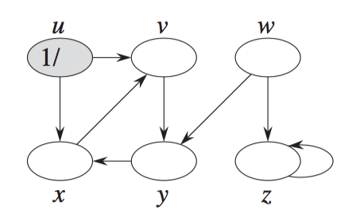
Chanllenge:
Work out the execution of
dfs_visit(G,u,0).Work out the excution of
dfs(G).Which vertices would not have been visited by
bfs(G, u)?
Properties of DFS:
Theorem (Parenthesis theorem)
For any graph $G$, given any two vertices $(u, v)$, we have exactly one of the three possibilities:
$[u.d, u.f]$ and $[v.d, v.f]$ are disjoint.
$[u.d, u.f] \subset [v.d, v.f]$
$[u.d, u.f] \supset [v.d, v.f]$
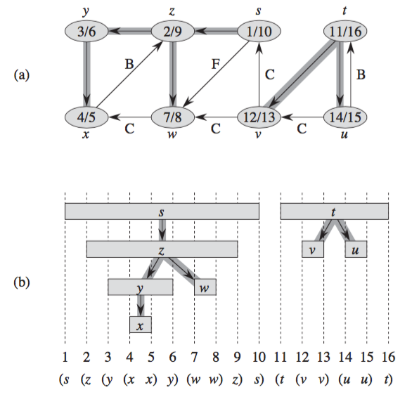
Predecessor subgraph of DFS
Recall that each vertex has a data
["parent"].This induces one or more trees.
Together, the trees are called the predecessor subgraph of $G$.
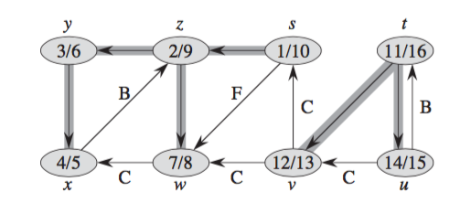 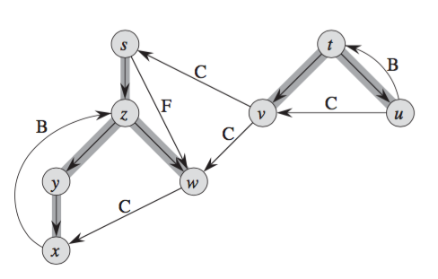
Applications of DFS: Topological sort
We have a list of tasks, which are interdependent by prerequisites:
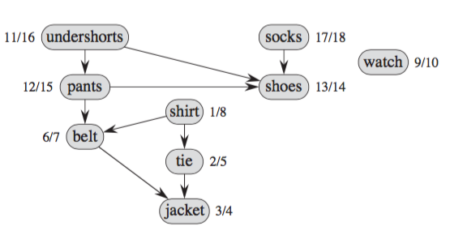
We would have to generate a plan to carry out the tasks:
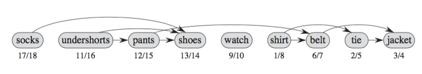
Applications of DFS: Topological sort
Form the dependency graph of the tasks. Each task is a vertex, and an edge $u\to v$ means that $v$ must be done sometime after after $u$.
Perform DFS on the dependency graph.
Sort the vertices (tasks) based on the decreasing ordering of the finishing time.
def topo_sort(G):
dfs(G)
return sort(G.nodes(), key=\lambda u: G.node(u)["f"], reverse=True)
Application: Strongly connected components
Recall the definition of reachablility:
Vertex $u$ can reach $v$, written $u\Rightarrow v$, if there exists path $p$ starting with $u$ to $v$.
Transpose of a directed graph:
The transpose $G^T$ of a graph $G$ is the graph obtained by reversing all the edges.
# returns a new graph
# that is the transpose of G
def tranpose(G):
...
! Can you complete the implementation of transpose?
Strongly connected components
Definition:
A strongly connected component (SCC) is a largest set of vertices ${v_1, v_2, \dots, v_n}$ such that
$$\forall i,j,\,v_i \Rightarrow v_j\ \mathrm{and}\ v_j\Rightarrow v_i$$
Problem:
Given a graph $G$, find all its SCC.
_____
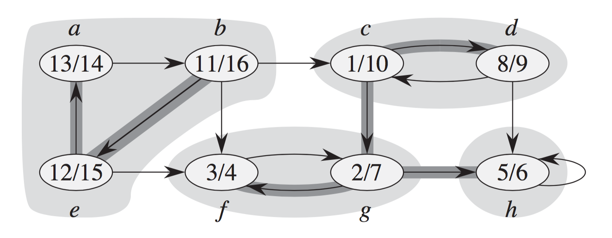
- There are four SCC in the graph.
- Also note that predecessor trees are not SCCs. !
_____
Theorem:
- Compute the transpose $G^T$ of the graph $G$.
- Apply DFS of $G^T$ according to a topological ordering of $G$ (important).
- Each predecessor tree of
dfs($G^T$)is a strongly connected component of $G$.- !
_______
def strongly_connected_components(G):
H = transpose(G)
for u in H.nodes():
H.node(u).["color"] = "white"
H.node(u).["parent"] = None
t = 0
for v in topo_sort(G):
if H.node(v)["color"] == "white"
t = dfs_visit(H, v)
return get_components(H)
! Note:
Gis the original graph andHis the transpose ofG.
_____
def get_root(H, v):
parent = H.node(v)["parent"]
if parent == None:
return v
else:
return get_root(H, parent)
!
Get the root vertex of the precedessor tree that v belongs to.
def get_components(H):
components = dict()
for v in H.nodes():
if H.node(v)["parent"] == None:
components[v] = []
for u in H.nodes():
root = get_root(H, u)
components[root].append(u)
return components
! Gets the strongly connected components based on the predecessor trees of the transpose graph.
_____
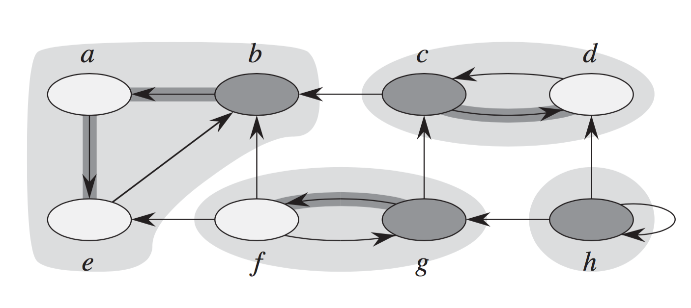
SCC Application: graph abstraction
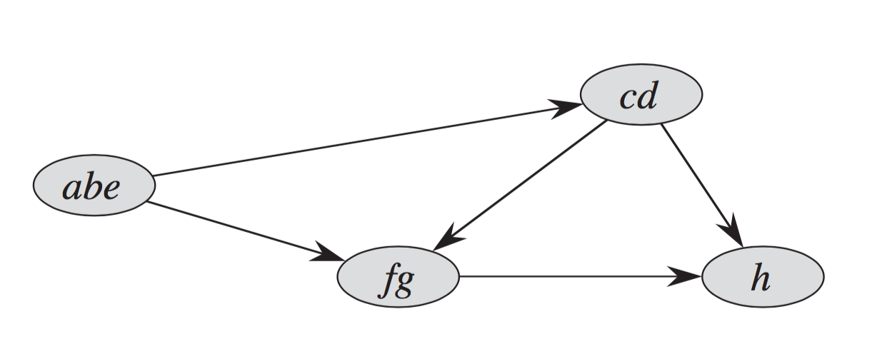
SCC Applications…
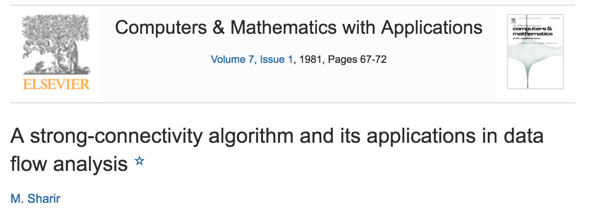
! Can you think of an application for S.C.C.?
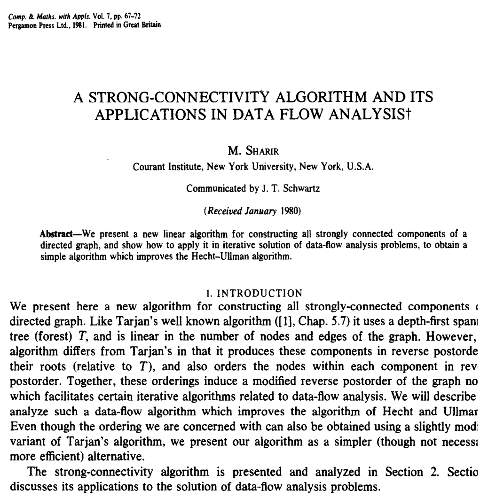